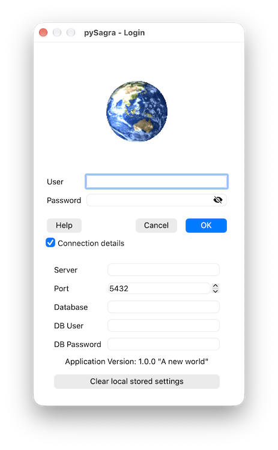
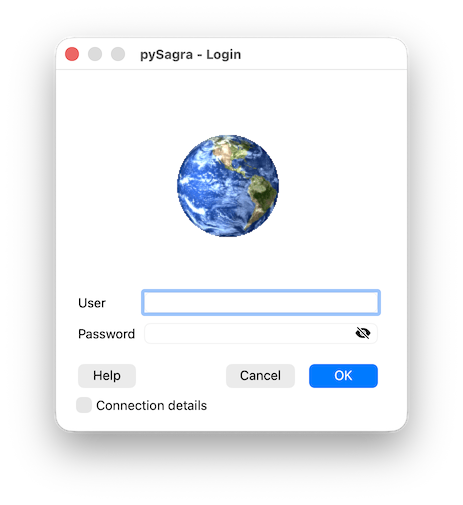

To use pySagra it is necessary to connect the program to a PostgreSQL database server where a pySagra application database is already present. Please see the specific instructions for installing the server and the application database.
At the first launch of the application, the connection parameters to the server are requested and the window appears as shown in the figure:

The parameters required to connect to the database server are:
Using the Clear local settings button, it is possible to reset any application settings stored locally on the PC (not in the database) that have caused problems. Typical examples include: accidentally hiding all toolbars, changing the window size making it invisible, etc.
There are 2 default and non-modifiable system application users:
These users are administrators and are assigned a menu and a profile that allows them full access to all program features. It is recommended to change their password upon first access, but it is not mandatory
Additionally, 2 other users are preloaded:
Since they are normal users, they can be modified and even deleted. They are restricted in various ways, but any administrator can modify their permissions, profiles, and menus
The first time you access a server, ALL these parameters must be filled in. On subsequent occasions, the same parameters previously used successfully are proposed again, excluding the username and password:

To change the entered parameters, click on the box Connection details